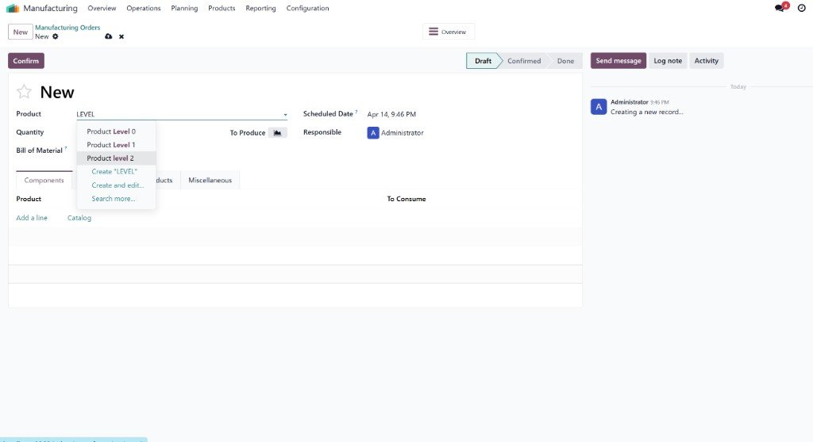
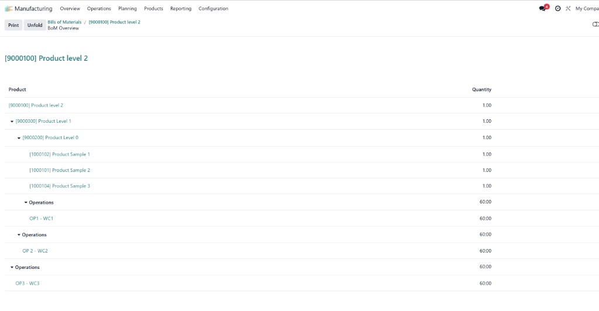

Multi-Level BoM Explorer
Convert complex BoMs into a clear, executable MO structure automatically.
Odoo 19
Manufacturing
Sales
Armonia

What "multi-level" means in practice
A multi-level BoM means your finished product contains sub-assemblies, and those sub-assemblies can also contain other manufactured parts. This module keeps that hierarchy intact and turns it into linked, traceable manufacturing orders.

Step 1 - Select the top-level product. The selected item (for example, Product level 2) already implies deeper production levels underneath.

Step 2 - Confirm hierarchy. The BoM overview displays the full parent-child structure from finished product to sub-assemblies and components.

Step 3 - Execute linked MOs. Child manufacturing orders are created and connected through source/origin for full traceability.
Business impact
Reduce manual MO creation, accelerate planning, and keep execution aligned with real BoM depth. Teams save time and lower planning mistakes on complex products.
Core capabilities
- Automatic multilevel MO generation when confirming the parent MO.
- Phantom kit handling with expansion of components.
- Subcontract-aware behavior to avoid conflicting flows.
- Safe recursion limit with controlled depth.
- Project number continuity across parent and child MOs.
- Operational field carry-over when present on source records.
Compatibility
- Requires Odoo 19.0 with Manufacturing and Sales.
- Use folder bom_multinivel for Odoo 19.
- Use bom_multinivel_18 for Odoo 18 installations.
If another customization also creates child MOs on confirmation, align logic to avoid duplicated generation.
Support